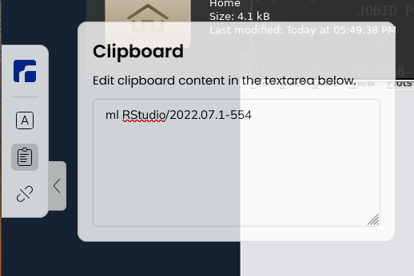

Introduction to compute nodes¶
Learning outcomes
- This is a short introduction in how to reach the calculation/compute/worker nodes
- The learners should be able to:
- Run simple jobs in the batch system
- Run interactively on compute nodes
- See when to run interactive and when to use batch system
- Check the progress of their jobs
Notes for teachers
Teaching goals:
- The learners demonstrate to have run in interactive
- The learners demonstrate to have run batch job
- The learners demonstrate to have understood when to use batch or interactive
- The learners demonstrate to have understood how to plan for jobs
Schedule (50 minutes):
- 10 minutes: lecturing
- 15 minutes type-alongs x 2
- 20 minutes: exercise + quiz
- 5 minutes: discuss answers
Nodes and cores¶
- Bianca contains hundreds of nodes.
- Each node is like a ordinary computer without a screen.
- One Bianca node consists of 16 cores.
- Each core can do work more or less independently.
There are two types of nodes:
| Type | Purpose |
|---|---|
| Login node | Start jobs for worker nodes, do easy things. You share 2 cores and 15 GB RAM with active users within your Sens project |
| Compute nodes | Do hard calculations, either from scripts of an interactive session |
- Our nodes on Bianca have this principle

- Our clusters (like Bianca) have this principle

Slurm schedules and allocates compute resources for you¶
- Problem: 1000 users, 300 nodes, 5000 cores
-
We need a queue system:
- Slurm is a job scheduler
Two ways to allocate compute resources¶
- Work interactively with your data or develop or test
- Run an Interactive session
$ interactive <flags> ...- Typical use cases:
- Run RStudio
- If you don't need any live interaction with your workflow/analysis/simulation
- Send your job to the slurm job batch (sbatch)
$ sbatch <flags> <program>or$ sbatch <job script>
flowchart TD
UPPMAX(What to run on which node?)
operation_type{What type of operation/calculation?}
interaction_type{What type of interaction?}
login_node(Work on login node)
interactive_node(Work on interactive node)
calculation_node(Schedule for calculation node)
UPPMAX-->operation_type
operation_type-->|light,short|login_node
operation_type-->|heavy,long|interaction_type
interaction_type-->|Direct|interactive_node
interaction_type-->|Indirect|calculation_nodeAllocation flags/Slurm parameters¶
- 1 mandatory setting for jobs:
- Which compute project? (
-A) - Example:
interactive -A sens2023598
- Which compute project? (
- 3 settings you really should set:
- Type of queue or partition? (
-p)corefor most jobs and default!nodefor larger jobs- for short development jobs and tests:
devcore,devel) - Example:
interactive -A sens2023598 -p core
- How many cores? (
-n)- up to 16 for core job (default 1)
- Example:
interactive -A sens2023598 -p core -n 4
- How long at most? (
-t)- Example: ask for 30 minutes of 4 cores
interactive -A sens2023598 -p core -n 4 -t 0:30:0
- Default is 1 min so set it if the job requires more time!
- Example: ask for 30 minutes of 4 cores
- Type of queue or partition? (
- If in doubt:
-p core-n 1, for Rstudio-n 2-t 10-00:00:00(10 days)
Jobs¶
- Job = what happens during booked time
- In interactive session = what you do "live"
- Otherwise (batch described in)
- a script file or
- the command-line (priority over script)
- Content of batch script :
- Slurm parameters (flags)
- Load software modules
- (Navigate in file system)
- Run program(s)
- (Collect output)
- ... and more
Slurm Cheat Sheet
-Aproject number-twall time-nnumber of cores-Nnumber of nodes (can only be used if your code is parallelized with MPI)-ppartitioncoreis default and works for jobs narrower than 16 coresnodecan be used if you need the whole node and its memory
The queue¶
Tip
- You don't see the queue graphically.
- But, overall:
- short and narrow jobs will start fast
- test and development jobs can get use of specific development nodes if they are shorter than 1 hour and uses up to two nodes.
- waste of resources unless you have a parallel program or need all the memory, e.g. 128 GB per node
See also
Core-hours¶
- Remember that you are charged CPU-hours according to booked #cores x hours
- Example 1: 60 hours with 2 cores = 120 CPU-hours
- Example 2: 12 hours with a full node = 192 hours
- Waste of resources unless you have a parallel program using all cores or need all the memory, e.g. 128 GB per node
Interactive jobs¶
Tip
- When to use?
- Development and programs that nees responiveness
- Pros
- Interactive jobs are high-priority
- Quickly gives you a job and logs you in to the compute node
- You run play with your data and do graphical analysis in real-time
- You can develop and test your coming workflows to be run later as perfect batch jobs with larger data.
Warning
- When to not use?
- Most work is most effective as submitted jobs (batch)
- Cons
- Limited to 12 hours (?) and 2 nodes (32 cores)
- CPU hours are ticking all the time the session is active, even if you do not perform any work
- Log in to compute node via the terminal:
- Log out with
<Ctrl>-Dorlogout
For example:
This starts an interactive session using project sens2023598
that uses 2 cores and has a maximum duration of 8 hours.
Try interactive and run RStudio¶
We recommend using at least two cores for RStudio, and to get those resources, you must should start an interactive job.
Demo/type-along
Tip
- Try to start the interactive session but if it takes a while, just listen.
- It may have started by the time for exercises
Use ThinLinc
-
If you already have an interactive session going on, use that.
- If you don't find it, do ``$ squeue`` - find your session, ssh to it, like: ``$ ssh sens2023598-b9`` -
Otherwise start a new one with:
$ interactive -A sens2023598 -p devcore -n 2 -t 30:00 --mail-type=BEGIN -
You will get an email wghen started so you don't miss some compute time!
Tip
- Try to start the interactive session but if it takes a while, just listen.
- It may have started by the time for exercises.
- We may all also return to this after some time!
-
When session is started, you can check which node you are from the information in your prompt, like:
[bjornc@sens2023598-b9 ~]$ -
Once the interactive job has begun after a while you need to load needed modules, even if you had loaded them before in the login node
-
Load an RStudio module and an R_packages module (if not loading R you will have to stick with R/3.6.0) and run "rstudio" from there.
$ ml RStudio/2023.06.2-561 -
Start rstudio, keeping terminal active (
&)
$ rstudio &
- Quit RStudio!
- Log out from interactive session with
<Ctrl>-Dorlogoutorexit
Tip
- (Re-)load modules in an interactive session
- Check your working directory,
pwd. You are not automatically coming to~or you project folder.
Job scripts (batch)¶
Info
- A batch job is an instruction you give the computer to perform.
- The instruction is settled when it has been sent to the job scheduler.
- you can though
cancelthe job, if you find out that you missed anything
- you can though
Tip
- When to use?
- Finished (and tested) automatic workflows where no interaction is needed
- Pros
- Very effective on CPU hours
- Ends when the job is done
- or if something goes wrong (hopefully)
Warning
- When to not use?
- When you need to interact or adjust settings during run
- Cons
- You have no interaction
- Batch scripts can be written in any scripting language. We will use BASH
- Make first line be
#!/bin/bash -lin the top line- It is good practice to end the line with
-lto reload a fresh environment with no modules loaded. - This makes you sure that you don't enable other software or versions that may interfere with what you want to do in the job.
- It is good practice to end the line with
- Before the job content, add the batch flags starting the lines with the keyword
#SBATCH, like:#SBATCH -t 0:30:00#SBATCH -p core#SBATCH -n 3
#will be ignored bybashand can run as an ordinary bash script- If running the script with the command
sbatch <script>the#SBATCHlines will be interpreted as slurm flags - Then add your workflow: An algorithm of the steps to be done from the terminal point of view.
- Think about what you would have to do yourself in the terminal to:
- run the tool in a login session from the terminal.
- and do possible modification to allow for use of more cores
- Think about what you would have to do yourself in the terminal to:
Try batch job¶
Type-along
- Write a bash script called
jobscript.sh- You can be in your
~folder
- You can be in your
- To make it faster Copy-paste the code below.
Tip

A (very) simple job script template¶
#!/bin/bash -l
#SBATCH -A sens2023598 # Project ID
#SBATCH -p devcore # Asking for cores (for test jobs and as opposed to multiple nodes)
#SBATCH -n 2 # Number of cores
#SBATCH -t 00:1:00 # One minute
#SBATCH -J Test # Name of the job
# go to some directory
cd /proj/sens2023598/
pwd -P
# load software modules
module load bioinfo-tools
module list
# do something
hostname
echo Hello world!
echo Using the srun command: Running the same commands using the available cores
srun hostname
srun echo Hello world!
-
Run it:
$ sbatch jobscript.sh
-
We can modify the slurm parameters for tests from the command-line.
$ sbatch -n 4 jobscript.sh
Warning
Do we need to go back and test the interactive?
Check the jobs¶
squeue— quick info about jobs in queuejobinfo— detailed info about jobsfinishedjobinfo— summary of finished jobsjobstats— efficiency of booked resources- use
eogto watch thepngoutput files
- use
bianca_combined_jobinfo
Slurm Cheat Sheet
-Aproject number-twall time-nnumber of cores-Nnumber of nodes (can only be used if your code is parallelized with MPI)-ppartitioncoreis default and works for jobs narrower than 16 coresnodecan be used if you need the whole node and its memory- must be used when allocating the fat nodes, see below
-C mem256GBallocate a fat node with 256 GB RAM-C mem512GBallocate a fat node with 512 GB RAM-
-C gpu -
Batch jobs
-
Two alternatives
sbatch <jobscript with all #SBATCH options>sbatch <options that will be prioritized over the options within the jobs script> <jobscript>- can for instance be used if you just want to test with, for instance, fewer cores and shorter time
- Example:
sbatch -t 60:00 -p devcore -n 2 job.sh
-
Interactive
-
interactive -A <project> <other options if not using default settings> - load your modules when session starts
Check and cancel jobs
squeuesee the pending and running jobs with their job IDsscancel [job ID]
Exercises 20 minutes¶
You are developing code on Bianca.
- You write the code line-by-line and schedule a test run after each addition.
- However, after each new line, it takes a couple of minutes before you know your code worked yes/no.
- How could you develop your code quicker?"
Answer
- This is the typical use-case to use an interactive node.
- One could also consider to develop code on a local computer instead (which uses nonsensitive/simulated/fake testing data) and upload the final code instead.
Why not always use an interactive session?
- Because it is an inefficient use of your core hours.
- An interactive session means that you use a calculation node with low efficiency: only irregularly you will use such a node to its full capacity.
- However, the number of core hours are registered as if the node is used at full capacity, as it is reserved to be used at that capacity.
Which approach is best in the following use cases? Batch jobs or interactive sessions?
- Long jobs
- Short jobs with interactive "run-time"/interactive user input
- Short jobs without interactive "run-time"/interactive user input
- Test/debugging/developing code
- Playing with and plotting large data
Answer
- batch
- interactice
- batch
- interactive
- interactive
Start an interactive session
- Ask for like 15 minutes only
- The goal of this exercise is to make sure you know how to start an interactive session.
- Try to reproduce the steps in the Demo above, if we did not manage!
Play with some changes in the submit script used in the Type-along
- Examples:
- more cores
- other things to do
Extra: Submit a complex Slurm job
- Make a batch job to run the demo "Hands on: Processing a BAM file to a VCF using GATK, and annotating the variants with snpEff". Ask for 2 cores for 1h.
- You can copy the my_bio_workflow.sh file in
/proj/sens2023598/workshop/slurmto your home folder and make the necessary changes.
- You can copy the my_bio_workflow.sh file in
Answer
- edit a file using you preferred editor, named
my_bio_worksflow.sh, for example, with the content - alternatively copy the
/proj/sens2023598/workshop/slurm/my_bio_workflow.shfile and modify itcd ~cp /proj/sens2023598/workshop/slurm/my_bio_workflow.sh . - edit
my_bio_workflow.shand add the SBATCH commands
#!/bin/bash
#SBATCH -A sens2023598
#SBATCH -J workflow
#SBATCH -t 01:00:00
#SBATCH -p core
#SBATCH -n 2
cd ~
mkdir -p myworkflow
cd myworkflow
module load bioinfo-tools
# load samtools
module load samtools/1.17
# copy and example BAM file
cp -a /proj/sens2023598/workshop/data/ERR1252289.subset.bam .
# index the BAM file
samtools index ERR1252289.subset.bam
# load the GATK module
module load GATK/4.3.0.0
# make symbolic links to the hg38 genomes
ln -s /sw/data/iGenomes/Homo_sapiens/UCSC/hg38/Sequence/WholeGenomeFasta/genome.* .
# create a VCF containing inferred variants
gatk HaplotypeCaller --reference genome.fa --input ERR1252289.subset.bam --intervals chr1:100300000-100800000 --output ERR1252289.subset.vcf
# use snpEFF to annotate variants
module load snpEff/5.1
java -jar $SNPEFF_ROOT/snpEff.jar eff hg38 ERR1252289.subset.vcf > ERR1252289.subset.snpEff.vcf
# compress the annotated VCF and index it
bgzip ERR1252289.subset.snpEff.vcf
tabix -p vcf ERR1252289.subset.snpEff.vcf.gz
- make the job script executable
- submit the job
EXTRA: Have look at the link below
-
Which jobs will start faster?
Links¶
- New Slurm user guide
- Discovering job resource usage with
jobstats - Plotting your core hour usage
- The job scheduler graphically
- Official slurm documentation
Discussion
- Discuss the exercise
- Any further thoughts?
Keypoints
- Slurm is a job scheduler to handle the compute nodes
- add flags to describe your job.
- You are always in the login node unless you:
- start an interactive session to do development or hands-on work
- start a batch job to run jobs not needing any manual input
- There is a job wall time limit of ten days (240 hours).